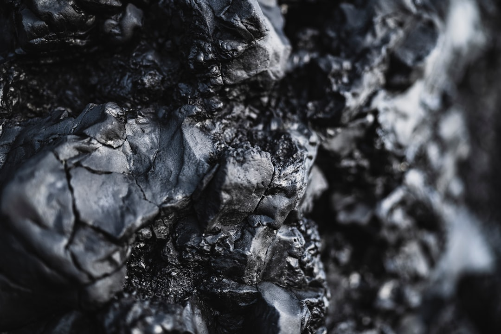

中, 갈륨은 日에 풀고 게르마늄은 계속 봉쇄…선별 통제 2라운드

중국은 2025년 5월, 약 4개월간 중단했던 일본향 갈륨 수출을 재개했다. 갈륨은 중국이 전 세계 공급량의 95% 이상을 장악한 소재로, GaAs·GaN 기반 반도체 기판과 LED·전력 반도체 핵심 원료다. 일본 재개 조건에는 최종 사용자 확인서(EUC) 제출 강화가 포함된 것으로 알려졌다.
반면 게르마늄은 2023년 8월 수출 허가제 도입 이후 실질 허가율이 크게 낮아진 상태가 지속되고 있다. 게르마늄은 광섬유·적외선 광학계·PET 필름 촉매 등 용도가 넓어 통제 유지 시 반도체 이외 산업까지 파급 범위가 넓다. 한국의 게르마늄 수입 중 대중 의존도는 약 60~70% 수준으로 추정된다.
이번 중국의 선택적 재개는 '국가별·용도별 분리 통제' 체계로의 전환 신호다. 일본은 갈륨 수입선 다변화를 진행 중이었고, 중국은 일본 기업의 최종 용도 추적이 가능하다고 판단한 것으로 보인다. 이는 곧 한국도 동일한 검증 체계를 요구받을 수 있음을 뜻한다.
한국은 현재 갈륨 수입의 약 87%를 중국에 의존하고 있으며, 고려아연이 2028년부터 연 15.5t 규모 국내 생산을 목표로 하고 있으나 당장의 조달 공백을 채우기에는 시간이 필요하다. 게르마늄 국산화는 고려아연·영풍의 아연 제련 부산물 회수 공정을 통해 추진 중이지만 상업 규모 확보는 2026년 이후로 예상된다.
중국의 선별 통제는 전략적 지렛대 극대화를 의미한다. 갈륨 재개로 '협력 가능한 파트너'와 '봉쇄 대상'을 구분하는 외교 신호를 보내면서, 게르마늄 봉쇄로 실질 압박을 유지한다. 소재마다 통제 강도를 달리하는 이 방식은 단일 규제보다 훨씬 정교한 공급망 무기화다.
한국 입장에서는 갈륨 재개가 곧 자국 공급 재개를 의미하지 않는다. 일본 사례에서 보듯 최종 사용자 확인 의무가 강화되면, 한국 기업은 거래처에 대한 정보 제출 압박을 받게 되고 이는 기술 유출 리스크와 직결된다. '안정적 재개'처럼 보이지만 실제론 조건부 족쇄다.
게르마늄 통제 지속은 광섬유·적외선 센서·의료 기기(PET)로 파급 범위를 넓히고 있다. 반도체 용도로만 보던 시각을 바꿔야 한다. 방산·의료 분야까지 게르마늄 수급 리스크가 확산되면, 한국의 피해 산업 범위는 반도체 단독 노출보다 훨씬 크다.
고려아연·영풍: 게르마늄·갈륨 국내 생산 추진 주체로서, 통제 장기화 시 국내 유일 공급원 프리미엄을 선점한다. 게르마늄 회수 공정이 상업화되면 현재 t당 900~1,100달러 수준인 게르마늄 가격 상승분을 그대로 수익으로 전환할 수 있다.
일본 스미토모·DOWAホールディングス: 갈륨 재개로 GaAs 기판 생산 재가동 여건이 마련됐다. 단기적으로 글로벌 갈륨 공급 타이트함이 완화되면서 수급 우위를 확보한 일본 기업이 고객사 계약 협상력을 높일 수 있다.
캐나다 5N Plus·독일 Vital Materials: 중국 외 갈륨·게르마늄 공급원으로 주목받는 기업들로, 통제가 지속될수록 장기 계약 문의와 프리미엄 가격 협상력이 동시에 강화된다.
한국 GaN 전력반도체·LED 기판 제조사: 갈륨 수급이 일본 중심으로 재편될 경우, 한국은 중국산 갈륨의 '조건부 허가' 구조에 더 오래 묶일 가능성이 있다. 글로벌 갈륨 가격이 ㎏당 400달러를 상회하면 원가 구조가 직격탄을 맞는다.
한국 광섬유·적외선 광학계 제조사: 게르마늄 봉쇄 지속 시 OFC(광섬유케이블)용 GeO₂, 열화상 카메라 렌즈 소재 수급에 비상이 걸린다. 특히 방산 수출 확대 시기에 게르마늄 부족은 납기 리스크로 직결된다.
갈륨과 게르마늄을 '같은 중국 규제'로 묶어 보는 시각을 당장 버려야 한다. 두 소재는 해제 조건도, 대체 공급선도, 최종 용도 범위도 다르다. 조달 담당자는 지금 당장 두 소재의 재고 수준과 '중국산 vs 비중국산' 비중을 분리해 관리해야 한다.
게르마늄은 지금이 재고 확충 적기다. 봉쇄 지속으로 가격 상방 압력이 유지되는 구간에서는 캐나다·독일산 대체 소재 공급사와의 장기 공급계약(LTA) 체결이 현물 구매보다 유리하다. 계약 단가를 현 시세 대비 10~15% 프리미엄으로 잠그더라도, 공급 불안 시기 조달 연속성이 더 큰 가치다.
갈륨 재개 소식에 방심하는 것이 가장 위험하다. 일본 사례는 '재개=자유화'가 아니라 '재개=조건 강화'임을 보여준다. 한국 기업도 최종 사용자 확인서 양식 준비와 내부 EUC 관리 체계를 지금부터 갖춰야 한다.
실제 조달 현장에서는 — 갈륨 통제 이후 일부 국내 GaN 소재 바이어들이 중국산 현물을 홍콩·싱가포르 중간상을 통해 조달하는 우회 경로를 사용해왔는데, 이 경로는 최종 사용자 검증 강화로 차단 압박이 커지고 있다. 지금은 우회 조달보다 합법적 대체 공급선을 서둘러 등록해두는 것이 중장기 안전망이다.
이 포스팅은 쿠팡 파트너스 활동의 일환으로 수수료를 제공받습니다.